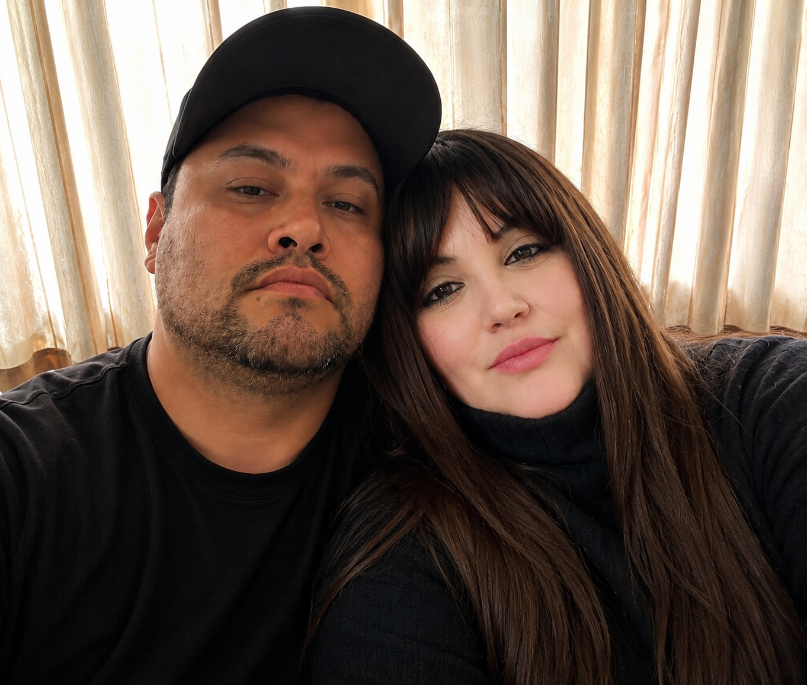
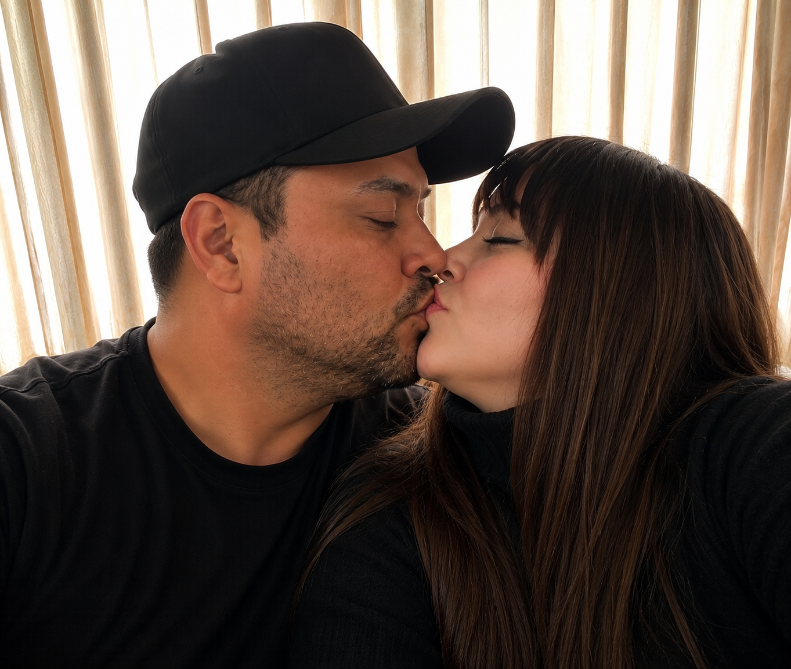
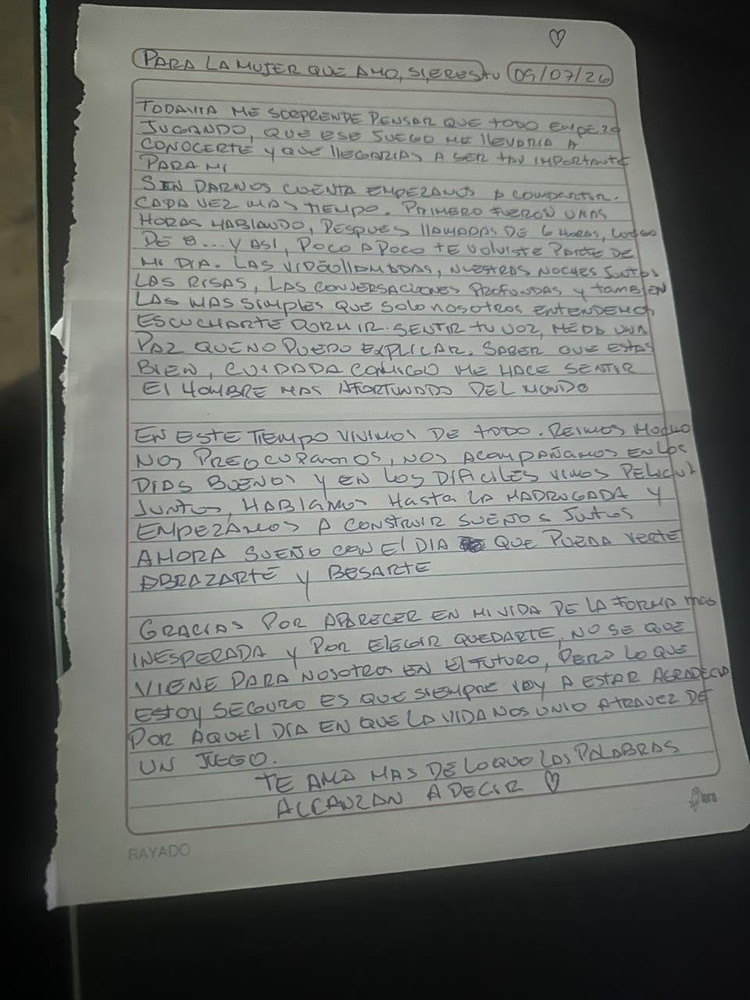
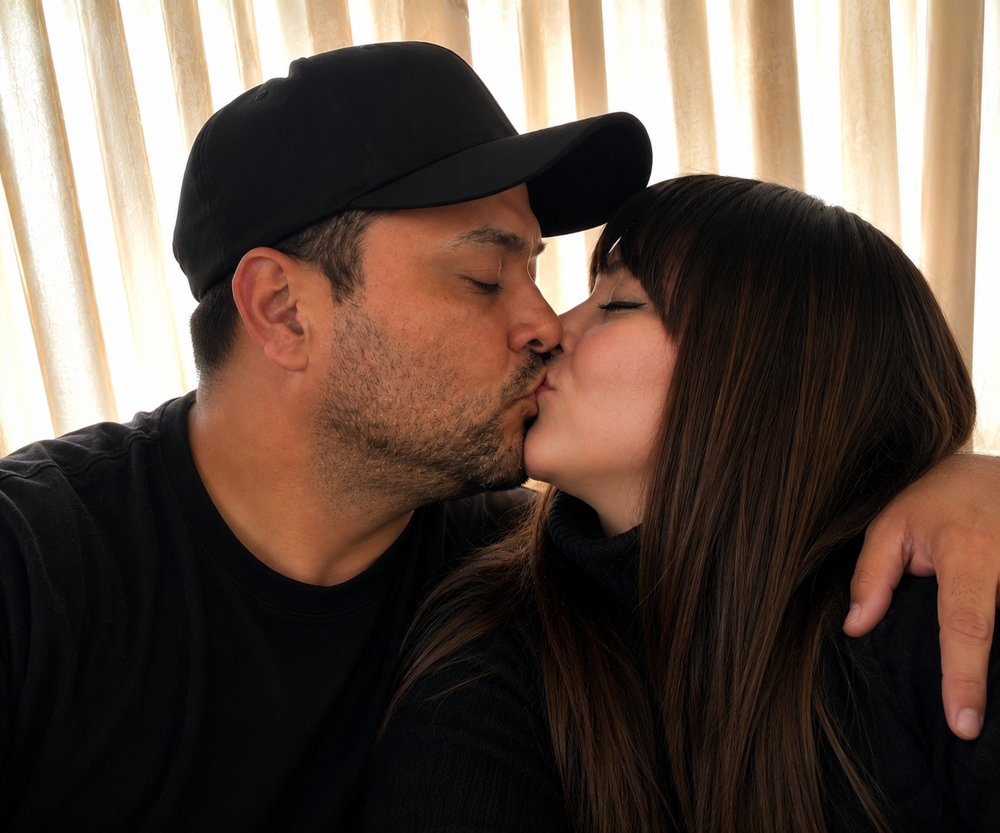

15 • 05 • 2026
Nuestra Historia ❤️
Para mi niña hermosa...
No importa cuántos kilómetros existan entre nosotros. Hay personas que hacen que la distancia deje de sentirse tan grande.
CAPÍTULO 01
Todo empezó donde menos lo esperaba 🎮
En Left 4 Dead 2.
Quién diría que entre partidas, zombis y conversaciones iba a encontrar a una persona capaz de cambiar mis días.
Y entonces apareciste tú, amor.
CAPÍTULO 02
Primero fueron tus ojos...
Te vi en tus estados. Tus ojos llamaron mi atención. Después, tu boca.
Y sin darme cuenta, ya quería hablar contigo todos los días.
CAPÍTULO 03
Mi lugar favorito nunca fue un sitio.
Llamadas de 6-8 horas. Videollamadas. Películas en Rave. Risas. Silencios. Quedarnos hablando hasta que el sueño gana.
Mi lugar favorito siempre fuiste tú.
UN RECUERDO QUE GUARDO EN EL CORAZÓN
Hay palabras que uno escucha...
Y hay palabras que recuerda para siempre.
Yo todavía recuerdo la primera vez que escuché esto.
Toca mi corazón

Nuestro futuro álbum 📸
Aún no tenemos un álbum lleno de fotos juntos. La distancia todavía nos debe ese abrazo.
Así que decidí empezar a imaginar nuestros recuerdos. Espero que un día volvamos a ver estas imágenes y sonriamos porque ya tendremos las verdaderas.
UNA CARTA QUE YA EXISTÍA ANTES DE ESTA PÁGINA
Para la mujer que amo siempre ❤️
Una vez intenté escribir en una hoja todo lo que sentía por ti...
Hoy quiero que vuelvas a leerla.

Hoy nos separan kilómetros.
Pero siempre encuentro la forma de tenerte cerca: en una llamada, en una película, en una risa, en un “te amo”.
Y algún día... también en un abrazo. ❤️

15 de mayo de 2026
↓15 de julio de 2026
2 meses ❤️
Infinitas razones para seguir eligiéndote.